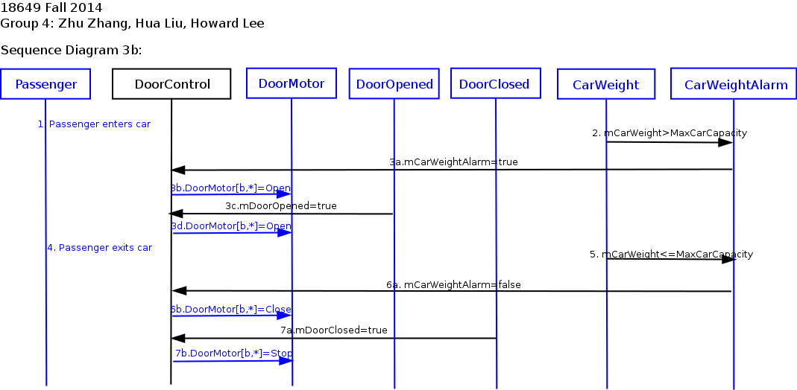

18-649 Scenarios and Sequence Diagrams
18649 Fall 2014
Group 4 - Zhu Zhang (zhuzhang), Hua Liu (hual1), Howard Lee
(hweekeul)
Scenarios:
- 1. Passenger Makes a Hall Call
- 2. Passenger Makes a Car Call
- 3. Passenger Enters Car
- 4. Passenger Exits Car - R-T8.1, R-T8.2
- 5. Passenger Triggers Door Reversal
- 6. Determine Car Position
- 7. Determine Car Direction
- 8. Move Car to Next Floor
- 9. Cycle Doors
- 10. Door Nudge
- 11. Dispatcher Computes Next Floor
Use Case 1: Passenger Makes A Hall Call
Scenario 1A: Passenger arrives at a hallway while elevator is elsewhere.
Pre-Conditions:
- All doors are closed.
- Passenger has already arrived at a hallway to use the elevator.
- Car is at another floor.
Scenario:
- Passenger pushes hall call (up or down) button for passenger's desired direction d.
- Passenger sees that corresponding hall button light turns on.
Post-Conditions:
- Elevator has not yet arrived at the passenger's floor.
- All doors are closed.
- Hall button light for passenger's desired direction is on.
Sequence Diagram:

Scenario 1B: Passenger arrives at a hallway when elevator is already there and the car is traveling in the same direction as desired by passenger.
Pre-Conditions:
- Car is at same floor as passenger.
- Car is traveling in same direction d as desired by passenger.
- At least one door[b,r] is open.
- Hall button light [f,b,d] for passenger's desired direction is off.
Scenario:
- Door[b,r] starts closing.
- Passenger arrives at a hallway [f, b] to use the elevator, with intent to travel in direction d.
- Passenger presses hall call button before doors are fully closed, but after doors are too fully closed for passenger to enter.
- Hall button lights up.
- Doors complete closing. (You might want to change this step; it's OK to do that for this project assignment.)
Post-Conditions:
- Elevator is at the passenger's floor.
- Door is closed.
- Hall button light for passenger's desired direction is on.
Sequence Diagram:

Scenario 1C: Passenger arrives at a hallway when elevator is already there and the car is traveling in opposite direction as desired by passenger.
Pre-Conditions:
- Car is at same floor f as passenger.
- Car is traveling in opposite direction ~d than direction d desired by passenger.
- At least one Door[b,r] is open.
- Hall button light for passenger's desired direction is off.
Scenario:
- Door[b,r] starts closing.
- Passenger arrives at a hallway [f,b] to use the elevator going in direction d.
- Passenger presses hall call button before doors are fully closed, but after doors are too fully closed for passenger to enter.
- Hall button lights up.
- Doors complete closing.
Post-Conditions:
- Elevator is at the passenger's floor.
- All doors are closed.
- Hall button light for passenger's desired direction is on.
Sequence Diagram:

Use Case 2: Passenger Makes A Car Call
Scenario 2A: Passenger is in the car and elevator is not at the desired destination floor.
Author name: Zhu Zhang
Pre-Conditions:
- Car is at floor f, with at least one Door[b,r] open.
- Passenger is in the car and elevator is not at the desired destination [g,c], where f != g. Also, b might or might not be equal to c.
- Car call button for the desired destination is not lit.
Scenario:
- Passenger presses car call button for desired destination
floor g.
- Car call button for the desired destination lights up.
- Door[b,r] starts closing.
- Doors complete closing.
Post-Conditions:
- Elevator is at floor f.
- Car call button for floor g is lit.
- All doors are closed.
Sequence Diagram:
{kind=link}
2B: Passenger is in the car and the elevator has arrived at the passenger's desired floor, but passenger has not yet exited the car as the doors begin to close.
Author name: Zhu Zhang
Pre-Conditions:
- Passenger is in the car.
- Elevator has arrived at the desired hallway, but the passenger has not yet exited the car.
- At least one door[b,r] is open.
Scenario:
- Door[b,r] starts closing.
- Passenger presses car call button for current floor f.
- Door[b,r] stops closing and begins opening.
- Doors complete open.
Post-Conditions:
- Elevator is at passenger's desired floor f.
- All doors are open.
Sequence Diagram:
{kind=link}
Use Case 3: Passenger Enters Elevator
Scenario 3A: Passenger is waiting at a hallway for the elevator and has already pressed the hall call button.
Author name: Zhu Zhang
Pre-Conditions:
- Car is about to arrive at a hallway [f,b] at which passenger is waiting.
- The hall call button for passenger's desired direction d has already been pressed
- The elevator is going in direction d.
- Passenger is outside the car.
- All doors are closed.
Scenario:
- Car arrives at hallway [f,b].
- CarLantern[d] turns on.
- Doors start opening.
- Doors complete open.
- HallLight[f,b,d] turns off.
- Passenger enters the car.
Post-Conditions:
- Elevator is at floor f.
- All doors are open.
- CarLantern[d] is on.
Sequence Diagram:
{kind=link}
Scenario 3B: Passenger enters
elevator and total weight is over max capacity.
Author name: Zhu Zhang
Pre-Conditions:
- Car is at a hallway [f,b].
- At least one DoorMotor[b,r] is commanded to Close.
- CarWeight is less than MaxCarCapacity now.
- CarWeight + weight of passenger is greater than MaxCarCapacity.
Scenario:
- Passenger enters elevator causing CarWeight exceeds MaxCarCapacity.
- CarWeightAlarm turns On.
- Doors stay Open.
- Passenger exits elevator.
- CarWeightAlarm turns Off.
- Doors begins closing.
- Doors completes closing.
Post-Conditions:
- Elevator is at floor f.
- All doors are closed.
- CarWeight is less than MaxCarCapacity.
Sequence Diagram:

Use Case 4: Passenger Exits Elevator
Scenario 4: Passenger is in the elevator as it arrives at the passenger's desired hallway.
Author name: Zhu Zhang
Pre-Conditions:
- Passenger is inside the car, traveling to desired floor f and hallway b.
- Car is traveling in direction d
- All doors are closed.
Scenario:
- Elevator arrives at floor f and hallway b.
- CarLantern[d] turns on.
- Doors start opening.
- Doors complete open.
- Passenger exits the car.
Post-Conditions:
- Elevator is at floor f.
- CarLantern[d] is on.
- All doors are open.
Sequence Diagram:
{kind=link}
Use Case 5: Passenger Triggers Door Reversal
Scenario 5A: Passenger attempts to enter the car as the doors begin to close.
Author name: Howard Lee
Pre-Conditions:
- Passenger is outside the car.
- Car is stopped at passenger's floor f and hallway b.
- At least one door[b,r] is open.
Scenario:
- Door[b,r] starts closing.
- Passenger attempts to enter the car and triggers DoorReversal[b,r].
- Door[b,r] starts opening.
- Door[b,r] is fully opened.
- Passenger enters the car.
Post-Conditions:
- Elevator is at floor f.
- Door[b,r] is open.
- CarLantern[d] is remains on and HallLight[f,b,d] is off.
Sequence Diagram:
{kind=link}
Scenario 5B: Passenger attempts to exit the car as the doors begin to close.
Author name: Howard Lee
Pre-Conditions:
- Passenger is inside the car.
- Car is stopped at passenger's floor f and hallway b.
- At least one door[b,r] is open.
Scenario:
- Door[b,r] begins to close.
- Passenger attempts to exit the car and triggers DoorReversal[b,r].
- Door[b,r] starts opening.
- Door[b,r] is fully opened.
- Passenger exits the car.
Post-Conditions:
- Elevator is at floor f.
- Door[b,r] is open.
- Passenger has exited the car.
Sequence Diagram:
{kind=link}
Use Case 6: Determine Car Position
Scenario 6A: Car moves from hallway f on floor x to adjacent hallway g on floor y and stops.
Note: Recall that the Drive of the elevator we provided is never commanded to go Fast, so the elevator only moves Slow and can therefore stop right away when it sees the appropriate AtFloor[f, b](True). Your solution will probably involve the Drive going Fast for some portion of the trip, and the CarLevelPosition Sensor to plan when to slow down. You will be given information on how to design a Fast Drive in the upcoming projects. For Project 2, a Slow Drive will suffice.
Author name: Howard Lee
Pre-Conditions:
- Car is at hallway [f, b].
- All elevator doors are closed.
- Car is moving in hoistway.
Scenario:
- Car arrives at desired floor, y and hallway, g.
- DriveControl sets Drive to be STOP and DriveSpeed becomes STOP with no latency.
Post-Conditions:
- Elevator is at floor y
- All Door are closed.
- DriveSpeed is at STOP.
Sequence Diagram:

Use Case 7: Determine Car Direction
Scenario 7A: Elevator opens doors when Dispatcher's intended direction is Up or Down.
Author name: Hua Liu
Pre-Conditions:
- Elevator is stopped at floor f, and AtFloor[f,b] was last received as True.
- Dispatcher intends direction d and is enabling pickup in hallway b.
- All doors are closed.
- Both Car Lanterns are off.
Scenario:
- CarLantern[d] lights on.
- Doors on b start to open.
- Doors finish opening.
Post-Conditions:
- CarLantern[d] is on.
- Doors on b side are open.
Sequence Diagram:
Scenario 7B: Elevator arrives at a hallway and the desired direction is Stop.
Author name: Hua Liu
Pre-Conditions:
- Elevator is stopped at floor f, and AtFloor[f,b] was last received as True.
- Dispatcher intends direction Stop (i.e., no selected direction), with enabled pickup in hallway b.
- All doors are closed.
- Both Car Lanterns are off.
Scenario:
- Doors on b side start to open.
- Doors finish opening.
Post-Conditions:
- Doors on b side are open.
Sequence Diagram:
{kind=link}
Scenario 7C: Elevator doors close on a hallway.
Author name: Hua Liu
Pre-Conditions:
- At least one Door[b,r] is open.
Scenario:
- Doors start to close.
- Doors finish closing.
Post-Conditions:
- All doors are closed.
Sequence Diagram:
{kind=link}
Use Case 8: Move Car to
Next Floor
Scenario 8A: Elevator moves from
{floor f, hallway b} to {floor g, hallway c} in direction d.
Author name: Hua Liu
Pre-Conditions:
- Elevator is at floor f, with at least one Door[b,r] open.
- Drive is stopped.
- DesiredFloor is set to {g,c}
Scenario:
- Doors start to close.
- Doors finish closing.
- CarLantern is turned Off.
- Drive starts to move elevator in d direction.
- Elevator arrives floor g.
- Drive starts to stop.
- Drive finishes stopping.
Post-Conditions:
- Elevator is at floor {g,c}, with doors closed.
- Drive is stopped.
Sequence Diagram:
{kind=link}
Scenario 8B: Elevator arrives a
floor which has a car call
Author name: Zhu Zhang
Pre-Conditions:
- Car is about to arrive at a hallway [f,b] which is passenger's destination.
- The car call button for passenger's desired floor [f,b] has already been pressed
- The elevator is going in direction d.
- Passenger is inside the car.
- All doors are closed.
Scenario:
- Elevator stops at hallway [f,b].
- CarButtonLight turns off.
Post-Conditions:
- Elevator is at floor {f,b}.
- Drive is stopped.
Sequence Diagram:
{kind=link}
Use Case 9: Cycle Doors
Scenario 9A: Elevator stops at hallway and doors open. Dispatcher computes next desired floor just as doors open. Doors close.
Note: This dispatcher is really dumb and stops at every floor,
in order. It would be much better to stop only at floors with
people on them or that people want to go to.
Author name: Howard Lee
Pre-Conditions:
- Car is stopped.
- AtFloor[f,b] was last received as True.
- All doors are closed.
Scenario:
- Door[b, r] opens.
- Dispatcher sends out mDesiredFloor to DriveControl.
- Door[b, r] is fully opened.
- Door[b, r] closes.
- Door[b, r] fully closes.
Post-Conditions:
- Door[b, r] is closed.
- DriveSpeed is yet zero.
Sequence Diagram:
{kind=link}
Use Case 10: Door Nudge
Scenario 10A: Door reversal is
triggered more than allowed times which in our case set as two.
Author name: Howard Lee
Pre-Conditions:
- DoorReversal[b, r] had been triggered twice.
- Door[d, r] is opened up all the way.
Scenario:
- Door[b, r] starts closing.
- DoorReversal[b, r] is triggered.
- Door[b, r] starts to open back up.
- Door[b, r] is fully opened.
- Door[b, r] is commanded to be stop.
- Door[b, r] is commanded to nudge.
Post-Conditions:
- Door[d, r] is closed.
Sequence Diagram:
Scenario 10B: Door is nudging and
CarCall is pressed for the floor f and b, where AtFloor[f, b] is
true.
Author name: Howard Lee
Pre-Conditions:
- Door[b, r] is nudging.
Scenario:
- CarCall[f, b] is pressed.
- Door[b, r] is commanded to open.
- Door[b, r] is open all the way.
- Door[b, r] is commanded to stop.
Post-Conditions:
- Door[b, r] is fully opened.